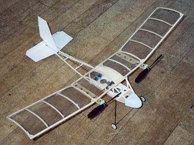
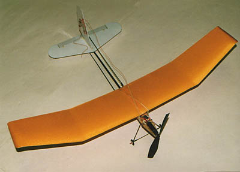

John Stennard Experiments
Inspired by the Flying Aces Stick
| John Stennard of England has taken my original concept for the Flying Aces Stick and really run with it. The images and notes that follow describe most of his variations. |

Original model, built essentially as shown on the original plans. The only variation was the use of depron instead of balsa for the tail surfaces. |
|

Twin version using the original fuselage, new wing and tail. |
Twin version as at left with new twin fin tail.
|
|
Original wings, with a different tail and a T-section carbon fiber tail boom. |
V dihedral balsa wing, KP-00 motor, CF skids and T-section CF tail boom |
|
V dihedral extended balsa wing, depron extensions, PU01 motor. |

CT tailboom, preformed depron wing. Very fast!
|
|
Reduced fuselage with Astro Firefly motor.
|
Reduced fuselage, V dihedral CF & balsa wing,
|
|
CF & balsa wing with ailerons. Not successful! |
Original FAS with a second wing.
|
Return to
my original version | Other Versions Index
Copyright 2003, Thayer Syme. All rights reserved